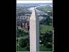
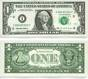

The Keys to The Solomon Key
 
In April of 2009 the publication of Dan Brown's long awaited new novel was announced with a publication date of September 15, 2009. In spite of a previous slip by a publisher's representative who had called the novel The Solomon Key, the new novel is entitled The Lost Symbol. Few secrets are revealed in the announcement save that the action will be compressed into twelve frantic hours. It is probably safe to assume that the novel will still unfold in Washington, D.C. and involve the Masons and their connections to leading figures in American history. Be sure to return for further updates as September approaches. This site will eventaully provide a full set of annotations to explain the references and allusions in the novel for the curious. See the initial efforts now in the form of a blog. For those who can't wait you might want to examine a list of possible interesting links.
Even before the publication of Dan Brown's next novel, purported to be titled The Solomon Key, articles, books, and yes even web pages such as this were beginning to appear. Many of these were commercial ventures hoping to capitalize on the economic success of Dan Brown's The DaVinci Code, and those books and other efforts connected with it.
My original goal was more modest: to provide a set of links to information (mostly electronic) that would enhance the reading and answer questions raised by pointing to sources and themes contained in the novel.
Before I begin let me record my own debt to the three already existing attempts: David Shugarts, Secrets of the Widow's Son, Greg Taylor, DaVinci in America: Unlocking he Secrets of Dan Brown's The Solomon Key (already renamed as The Guide to Dan Brown's The Solomon Key) and W. Frederick Zimmermann, The Solomon Key and Beyond: Unauthorized Dan Brown Update.
How does one begin to comment on an unreleased novel? Dan Brown himself has left us several hints concerning Robert Langdon's next adventure. The presumption is that it will center on Washington D.C., reference the Masons and the connection of American political figures tot hat organization. Some speculate that there will also be a connection to the Mormons and Joseph Smith based on a 1974 lecture.
All of this is great fun if you love puzzles, codes, or are simply curious. This is just a beginning. For those interested in the eventual outcome, visit my own The Keys to The Da Vinci Code.
In the fall of 2007 in anticipation of the novel I offered a seminar based on possible themes to be found in The Solomon Key. Students researched a number of topics and wrote papers and Power Point presentations. Many of the themes will also be of interest to those who have seen the movie, National Treasure II.